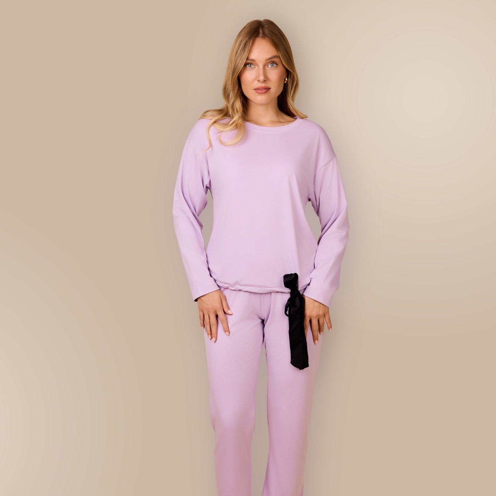
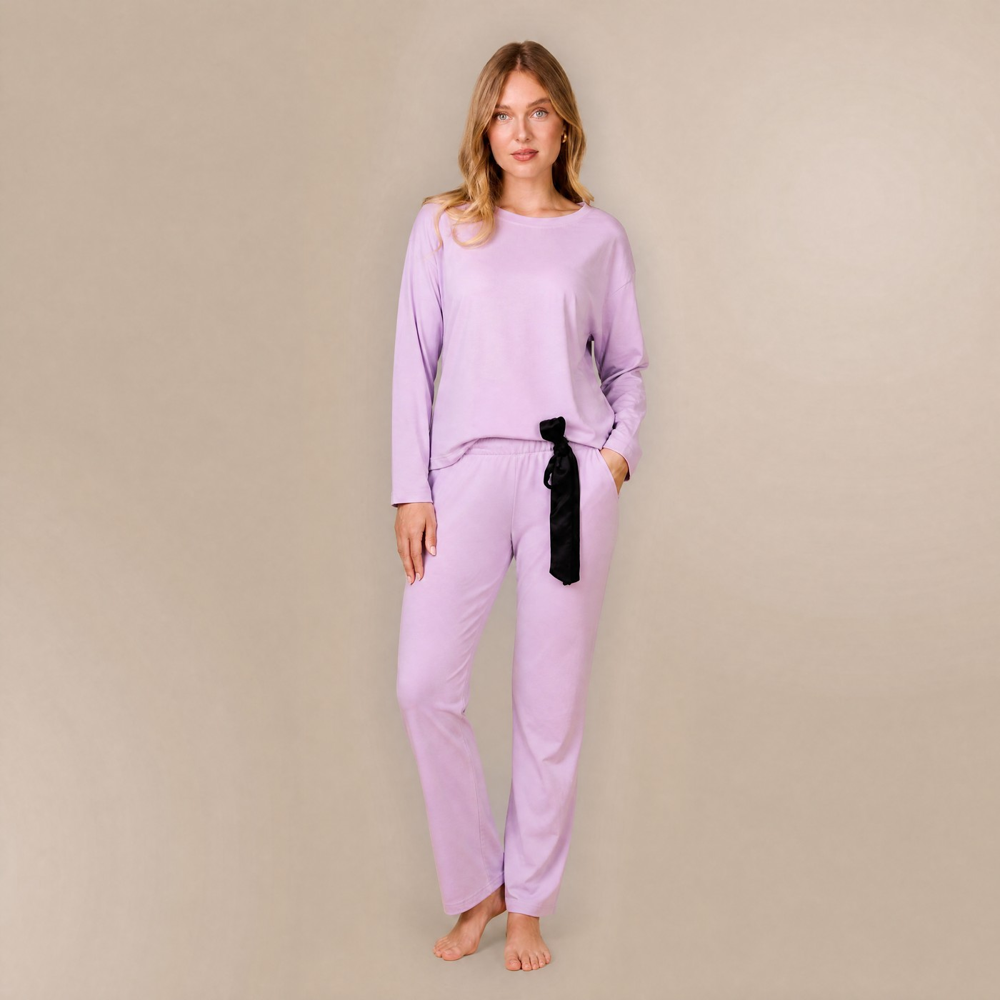
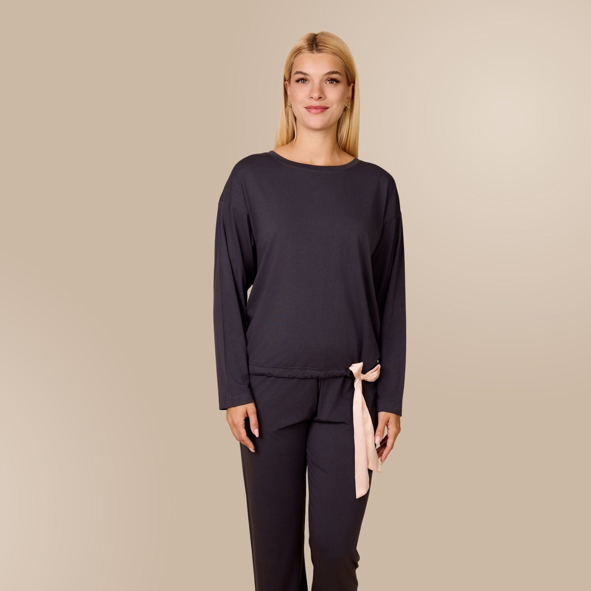
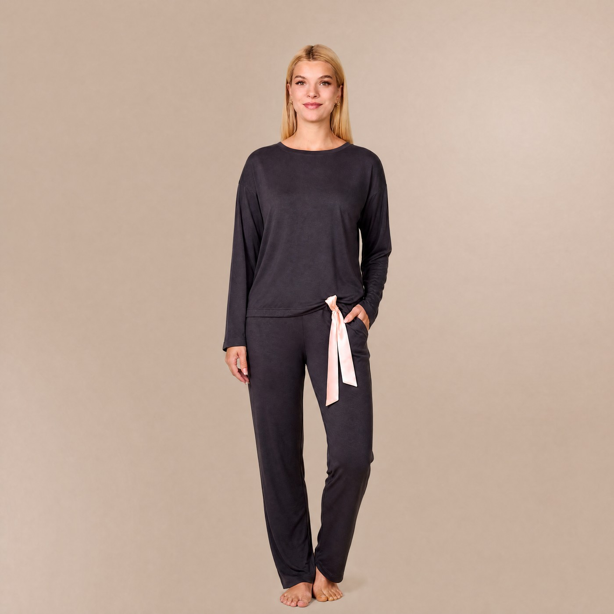

Popravek glavnih model fotk za dve dolgi pižami Soléa. Levo original, desno popravljena verzija. Izdelek (barva, kroj, trak) je nespremenjen — urejeni sta samo drža in videz. Klik na sliko odpre polno velikost; pod vsako lahko dodaš komentar.
← Vse galerije


